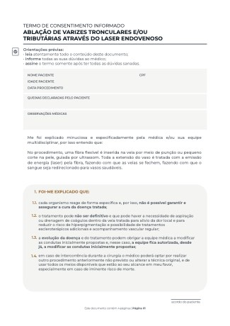

Varizes tronculares e tributárias
Ablação por laser endovenoso
Tratamento minimamente invasivo: por uma punção, uma fibra de laser é introduzida na veia doente e a energia térmica a fecha por dentro, redirecionando o sangue para vasos sadios.